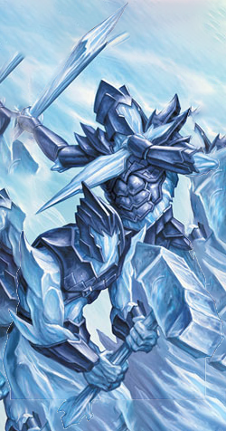

Greater Ignia
This shadowy berserker, though quite large, can still act as a stealthy threat in the dead of night. It lies under the cover of dark rock and foliage, dormant as if it were but a piece of the scenery, but once its psychic link informs it of nearby prey, it begins to charge forth and mercilessly crush all in its path.

Resonites
Tiny fledgelings of the Collective’s hierarchy, what such small crystals lack in sheer power, they make up for in numbers and raw tenacity. Without hesitance nor delay, they diligently follow the will of superior X’Tal and attack in special formations according to the task at hand.